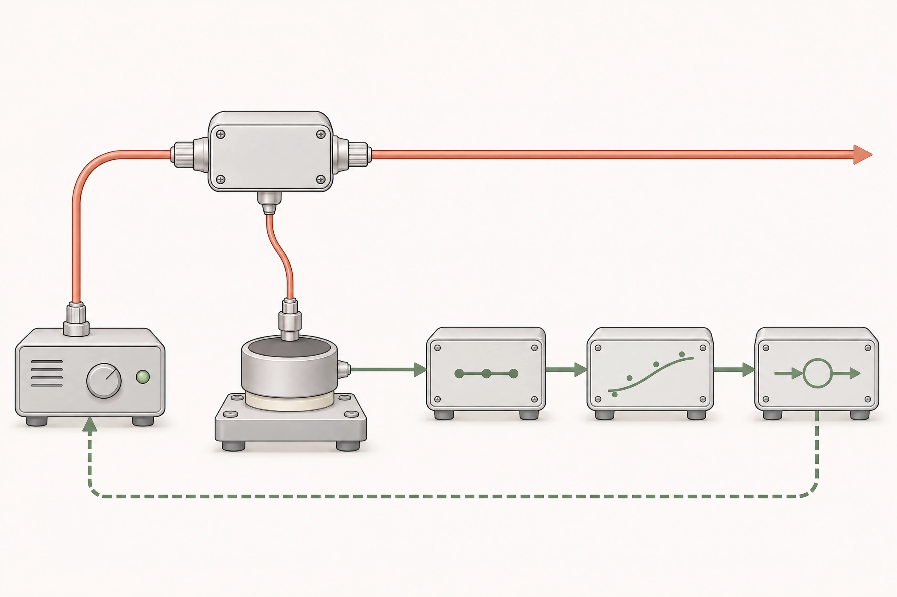

20 W / 40 W 稳态拟合差值
多数 <1%
20 W / 40 W 稳态测试中，模型拟合值与参考功率计读数的差值多数控制在 1% 以内。
医疗激光 / 功率监测
优化测量链与耦合器，
解决读数波动。

为铥激光器的功率监测、校准与闭环控制提供可靠反馈。激光器末端的同一耦合器在连接输出光纤的同时向热电堆能量探测器提供光学取样，需解决整机工作下的信号干扰与 ADC 读数波动，并建立功率换算模型。
负责热电堆应用分析、功率建模、耦合器与隔热安装改进，完成打样、对照试验及数据分析。
验证同时考虑整机热环境与参考功率计响应。
240 s 窗口
区间 0.40%–1.03%
横线连接区间下界与上界，圆点标记中位数 0.63%。
点选下界、中位数或上界，查看对应统计值。
以 25 个标定点覆盖 17.37–59.50 W、5 Hz–2.5 kHz 工况，模型拟合灵敏度提升 9.5%。
完成新版耦合器与隔热安装方案验证，解决 ADC 读数波动，实现铥激光功率闭环。
| 指标 | 数值 | 测试条件 |
|---|---|---|
| 稳态功率波动中位数 | 0.63% | 5 Hz / 4 J；240 s 窗口 |
| 稳态功率波动区间 | 0.40%–1.03% | 5 Hz / 4 J；240 s 窗口 |
| 标定点数 | 25 个 | 覆盖功率与频率工况 |
| 标定功率范围 | 17.37–59.50 W | 功率模型标定 |
| 标定频率范围 | 5 Hz–2.5 kHz | 功率模型标定 |
| 拟合灵敏度变化 | +9.5% | 模型标定后的拟合灵敏度变化 |
评估探测器响应特性，针对线缆干扰将模拟传输改为数字传输，并结合器件原理和实验建立应用及补偿模型。
通过软硬件替换和工况对照，分析信号采集、器件、安装和整机热环境对读数的影响，并与参考功率计比较。
重新设计铥激光耦合器，调整光学取样和探测器位置，设计隔热安装；完成打样、对照测试与数据分析后用于功率闭环。
在前期配置下验证热电堆功率建模方法，完成 20 W / 40 W 稳态对照与准连续（QCW）工作模式的拟合评估。
多数 <1%
20 W / 40 W 稳态测试中，模型拟合值与参考功率计读数的差值多数控制在 1% 以内。
R² ≈ 0.995
准连续（QCW）工作模式下的稳态功率模型拟合优度。